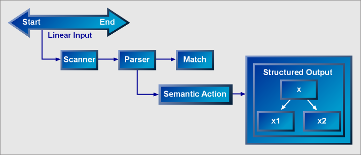
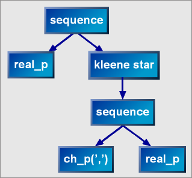
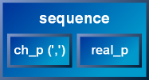
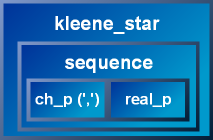
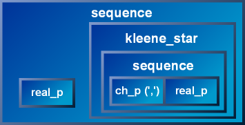
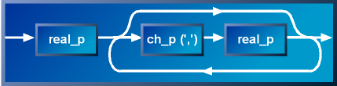
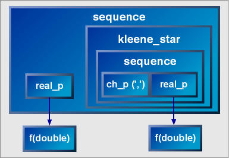

| 基本概念 |
|

|

|

|
有几个基本概念需要充分理解: 1) 解析器, 2) 匹配, 3) 扫描器, 以及 4) 语义动作. 这些基本概念彼此交互, 各自的功能在框架中相互交织, 使其成为一个连贯的整体.
|
 |
框架的核心是解析器. 解析器承担实际工作: 识别由扫描器从头到尾顺序读取的线性输入数据流. 解析器依照一组明确定义的规范(即文法规则)尝试匹配输入. 解析器通过一个匹配对象(match)向其客户端报告成功或失败. 成功时, 解析器会调用客户端提供的语义动作. 最后, 语义动作根据解析器传递的数据以及它所挂接的解析器的层次上下文, 提取结构信息.
解析器有多种形态. Spirit 框架附带了一套内容广泛的预定义解析器, 可执行从简单到复杂的各种解析任务. 解析器作为一个概念, 具有公开的概念接口契约. 遵循该契约, 任何人都可以编写出与框架预定义组件良好协作的合规解析器. 稍后我们将提供详细描述解析器概念接口的蓝图.
框架的使用者通常完全不需要自行手写解析器. Spirit 拥有庞大的预定义解析器库, 覆盖语法与语义分析的方方面面. 我们将在后续章节中考察这一解析器库. 在极少数特定功能不可用的情况下, 编写用户自定义解析器也非常容易. 编写解析器实体的这种便利性正是 Spirit 可扩展性的主要原因.
Spirit 解析器分为两类: 原语(primitive)与组合器(composite). 这两个类别大致对应解析术语中的终结符与非终结符. 原语是不可分解的原子单元. 组合器则是由其他解析器组成的解析器, 而那些解析器又可以是原语或另一个组合器. 为便于说明, 请看如下 Spirit 表达式:
real_p >> *(',' >> real_p)
real_p 是一个可解析实数的原语解析器. 表达式中带引号的逗号 ',' 是一种简写, 等价于 ch_p(','), 后者是另一个识别单个字符的原语解析器.
上面的表达式对应如下解析树:
|
 |
表达式:
',' >> real_p
组合出一个序列(sequence)解析器. sequence 解析器是由两个解析器组成的组合解析器: 左侧的(lhs) ch_p(','); 以及右侧的(rhs) real_p. 该组合解析器被调用时, 会依次调用其 lhs 与 rhs, 且仅当两者都成功时才报告匹配成功.
|
 |
sequence 解析器是一个二元组合器, 由两个解析器组成. 同样也存在一元组合器. 一元组合器只持有一个单一主体(subject). 与二元组合器一样, 一元组合器可以改变其内嵌主体的行为. 一个典型例子是 Kleene 星. Kleene 星被调用解析时, 会对它唯一的主体调用零次或多次. "零次或多次" 意味着 Kleene 星总是返回成功的匹配, 可能匹配的是空串: "".
表达式:
*(',' >> real_p)
将上面的整个序列组合器包裹在一个 kleene_star 中.
|
 |
最后, 完整的表达式将一个 real_p 原语解析器与上面的 kleene_star 组合成另一个更高层次的 sequence 解析器组合器.
|
 |
一些简单的类, 经组合并构建成层次结构后, 便构成一个极为强大的面向对象递归下降解析引擎. 这些类为构造更复杂的解析器提供了所需的基础设施. 最终得到的解析器组合器是一个具有无限向前看(non-deterministic recursive-descent with infinite look-ahead)能力的非确定性递归下降解析器.
自顶向下遍历层次结构. 外层 sequence 调用最左侧的 real_p 解析器. 若成功, 接着调用 kleene_star. kleene_star 在循环中反复调用内部的 sequence, 直至匹配失败或输入耗尽. 在其内部, ch_p(',') 与 real_p 依次被调用. 下图展示了这一过程, 有点像 Pascal 的语法图.
|
 |
对象嵌入与组合的灵活性加上递归, 开辟了一种独特的解析途径. 子类可以自由地构成任意复杂度的聚合体与算法. 仅凭少数几个原语类的组合即可创建复杂的解析器.
该框架被设计为完全开放且可扩展的. 新的原语或组合器, 从简单到复杂, 都可以随时添加. 组合(静态地)发生在编译期. 这得益于 C++ 表达式模板与模板元编程的表达灵活性.
结果是一个由原语和更小的组合器组成的组合器. 这种嵌入策略使我们能够构建完整建模任意复杂度 EBNF 表达式的层次结构. 稍后我们将看到更多的原语与组合构件.
与解析器一样, 扫描器也是一个抽象概念. 扫描器的任务是将顺序输入数据流喂给解析器. 扫描器由两个符合 STL 规范的前向迭代器 first 与 last 组成, 其中 first 以引用方式持有, last 以值方式持有. first 以引用持有是为了允许解析器重新定位. 一组策略(policy)决定扫描器的行为. 解析器从扫描器中提取数据, 并通过其成员函数适当地移动迭代器.
在大多数情况下, 完全不需要了解这些策略的复杂细节. 但是, 要编写完全合规的 Spirit 解析器, 则必须了解扫描器的基本 API. 扫描器的 API 将在单独一节中概述. 此外, 对于高级用户和喜欢探索的读者, 还将用完整的一节专门讲解扫描器策略. 扫描器策略使 Spirit 非常灵活且可扩展. 例如, 可以修改某些策略来过滤数据. 一个实际例子是不区分大小写的扫描器策略, 使之适用于解析大小写不敏感的输入. 另一个例子是从输入中剥离空白的扫描器策略.
解析器有一个概念性的 parse 成员函数, 接收一个扫描器并返回一个匹配对象. 匹配对象的首要功能是向解析器的调用方报告解析成功(或失败); 即, 若 parse 函数成功则其求值为 true, 否则为 false. 若解析成功, 还可以查询匹配对象以报告匹配的字符数(使用 match.length()). 匹配成功时长度为非负值, 而解析失败时的典型长度为 -1. 零长度是完全合法的, 仍表示一次成功的匹配.
解析器可以带有与之关联的属性数据. 例如, real_p 解析器就关联着一个数值数据. 该属性即被解析出的数字. 该属性会传递给返回的匹配对象. 可以查询匹配对象以获取此属性. 该数据仅在匹配成功时有效.
组合解析器构成一个层次结构. 解析从最顶层的父解析器开始, 它将解析任务递归地委派并分派给其子解析器, 再由子解析器传给子解析器的子解析器, 依此类推, 直到抵达某个原语. 通过在这个层次结构的各个节点挂接语义动作, 我们实际上可以把扁平的线性输入流变换为结构化的表示. 这正是解析器的本质所在.
回顾上面的示例:
real_p >> *(',' >> real_p)
通过向 real_p 解析器挂接一个函数(或函数对象), 我们可以从输入中提取数字:
real_p[&f] >> *(',' >> real_p[&f])
|
 |
其中 f 是接受单个实参的函数. [&f] 将解析器与该函数挂接, 使得当 real_p 识别出有效数字时便调用函数 f. 之后由该函数自行决定做什么. 例如, 它可以把数字存入一个 vector. 又或者, 若将文法稍作修改, 用 '+' 替换 ',', 我们就得到一个计算和的原始计算器. 此时可以让函数 f 将传入的所有数字相加.
|
|
|
|
Copyright © 1998-2003 Joel de Guzman
使用、修改与分发受 Boost 软件许可 1.0 版(Boost Software License, Version 1.0)约束. (随附文件 LICENSE_1_0.txt 或复制于 http://www.boost.org/LICENSE_1_0.txt)